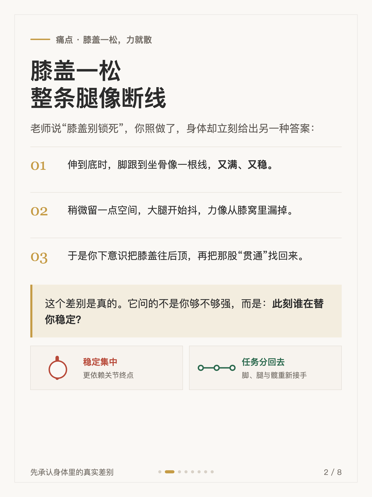
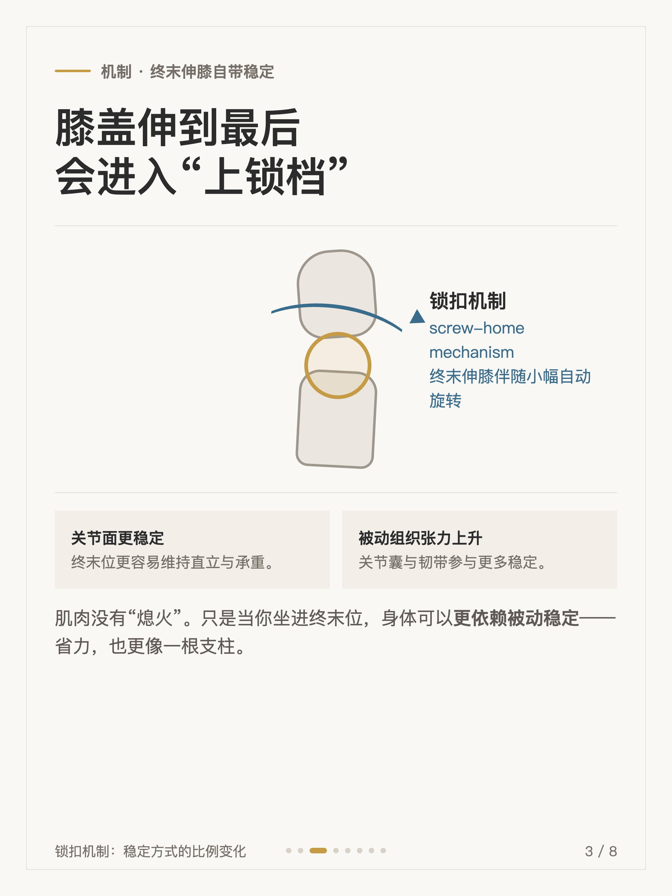
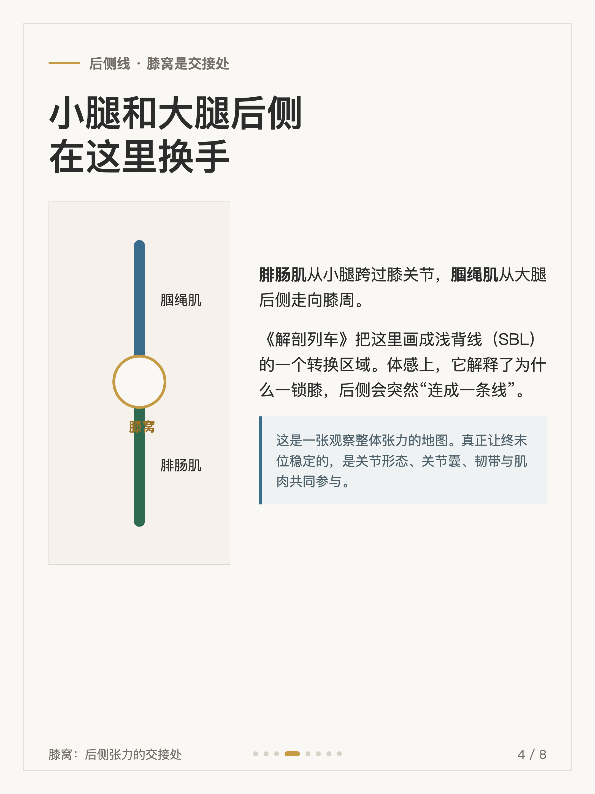
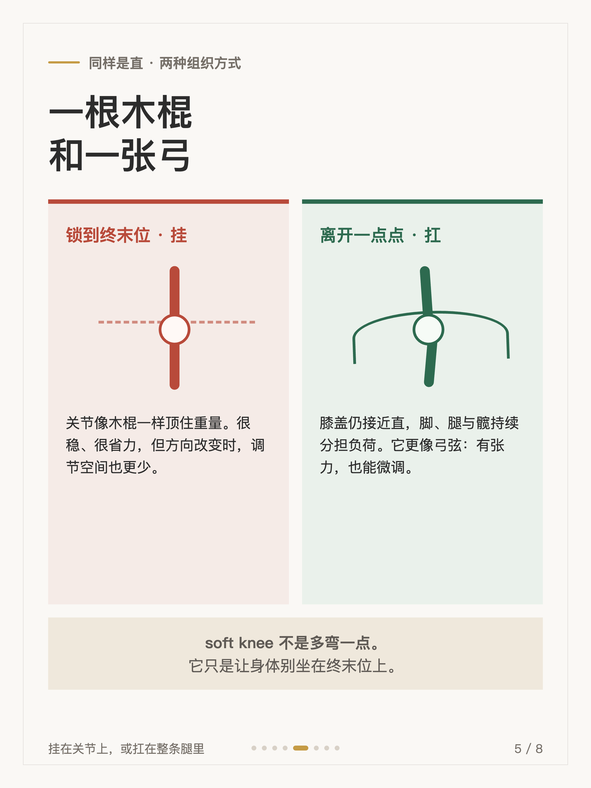
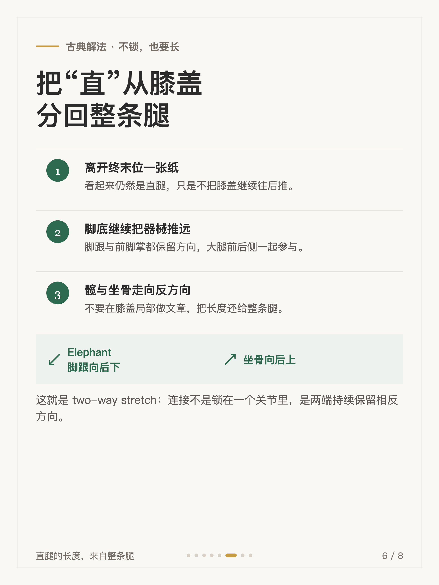
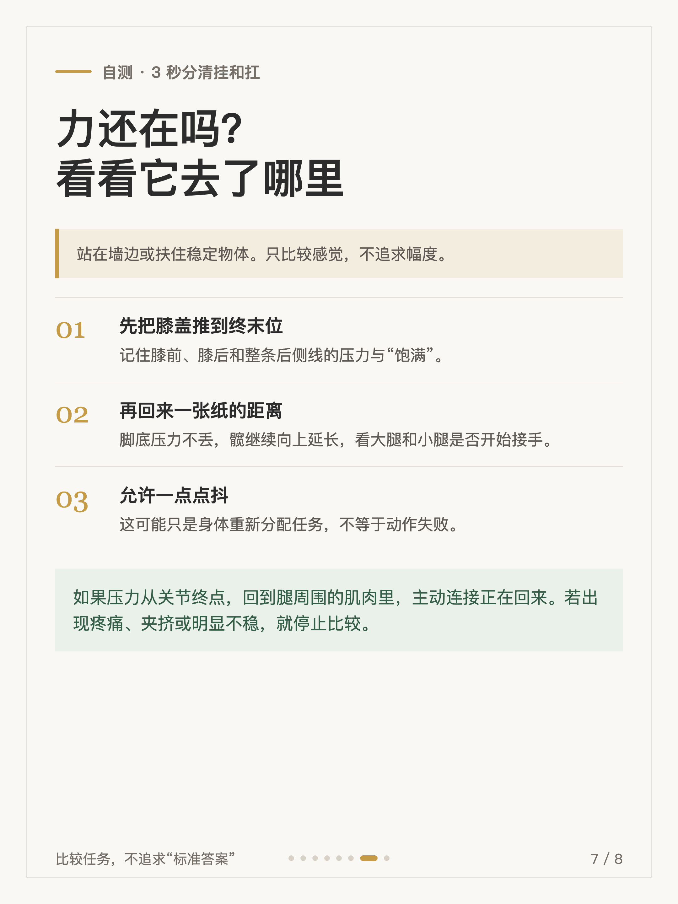
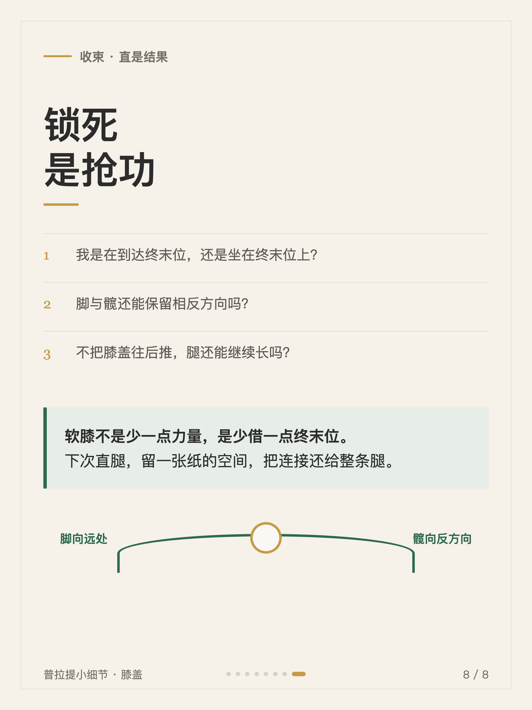

普拉提小细节 #005
膝盖别锁死，练的是更高级的连接

1 / 8

2 / 8

3 / 8

4 / 8

5 / 8

6 / 8

7 / 8

8 / 8
← 左右滑动浏览全部卡片 →
老师说「膝盖别锁死」，你照做了，腿却立刻像断了线——这个差别是真的，它问的不是你够不够强，而是此刻谁在替你稳定。膝关节伸到最后几度会伴随小幅自动旋转，叫锁扣机制（screw-home mechanism）：关节面更稳定，同时关节囊与韧带的被动张力上升。肌肉没有熄火，只是你坐进终末位之后，身体可以更依赖被动组织。
膝还是浅背线（SBL）的转换站，小腿和大腿后侧在这里换手。所以古典的解法不是把膝盖顶回去，而是把「直」从膝盖分回整条腿——直是结果，锁死是抢功。